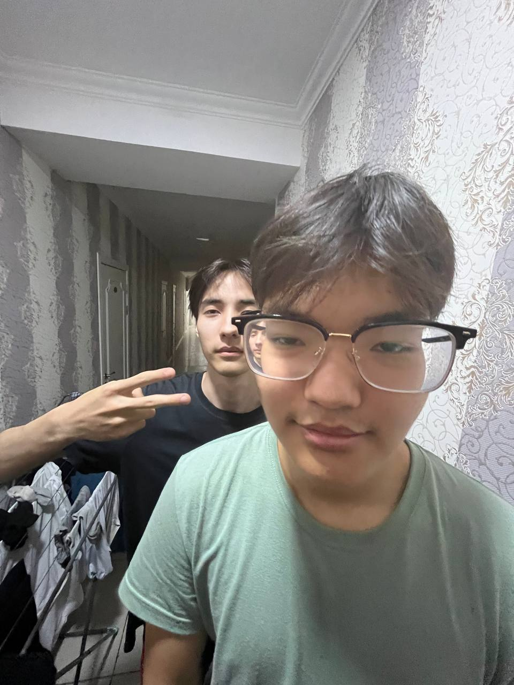

О себе
Привет! Я Бека братан, студент AIU и человек, который не боится бросать вызовы. Сейчас качаюсь с 72 кг до 82 кг, и вообще стараюсь прокачивать и тело, и мозги.
Люблю кодить, учиться новому и создавать крутые проекты. Этот сайт — мой первый шаг к большому портфолио.
Если хочешь связаться — переходи на страницу «Контакты» или пиши прямо сюда!